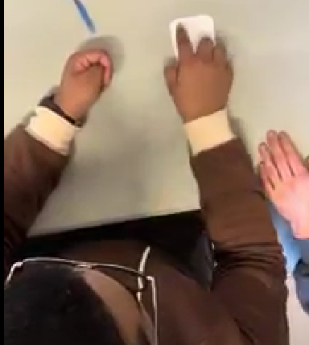
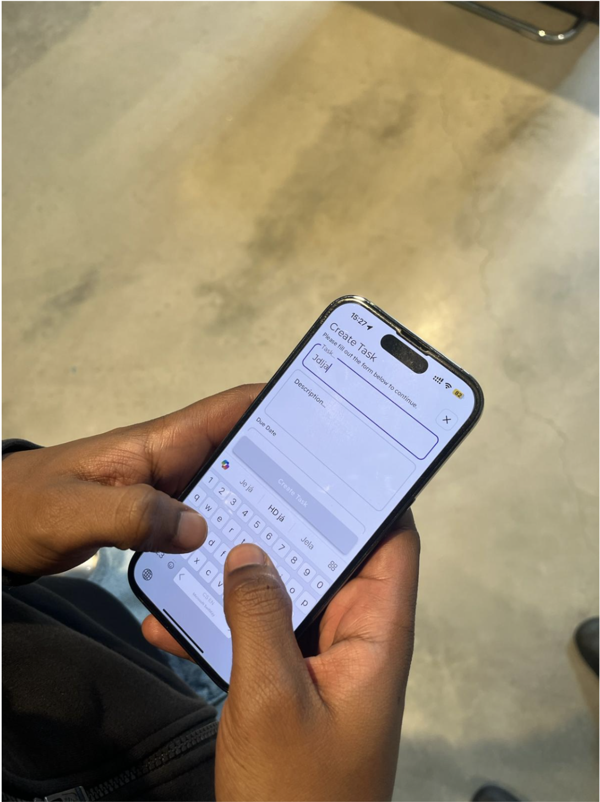
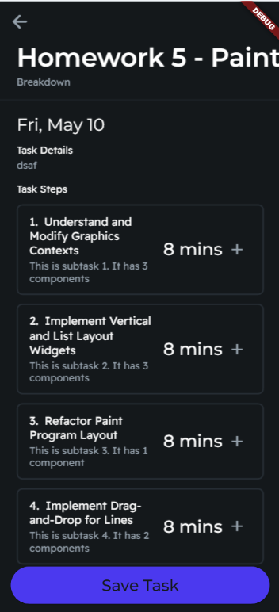
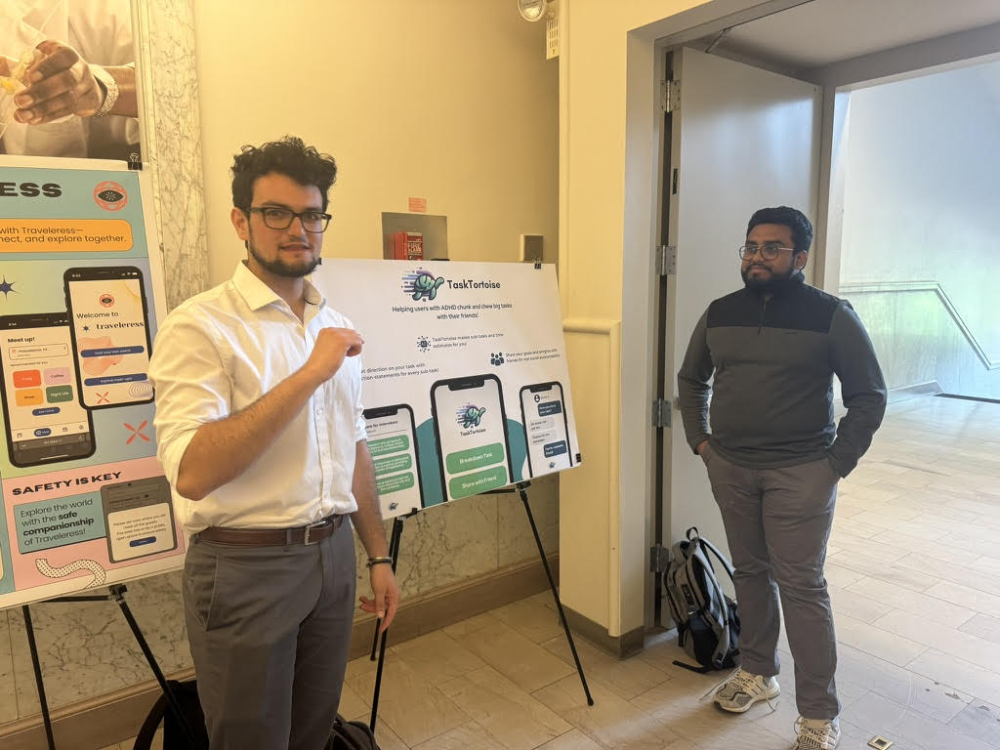

Reflecting on this project and our time in CIS 5120: Introduction to Human-Computer Interaction
Design Learnings
TaskTortoise began from a desire to alleviate the struggles of users with ADHD, with one of our members newly diagnosed and working to understand how to structure life to fit these newly understood challenges. Interviewing users has been an illuminating experience, confirming original ideas’ effectiveness, leading us in new directions, or cautioning us of over-complicated approaches.
At first, TaskTortoise was conceived as a new form of social media for productivity, without an organization component. However, In our interview with AR, we spoke with a person with ADHD who was diagnosed a few years prior and described how she “would just sit there, staring at the prompt, doing nothing,” during one finals season. AR had tried using their calendar extensively, but this became too easy to let slip and eventually bore no meaning on the activities they engaged in. They once took extensive notes about the tasks that were needed for the day, with limited success. This system was a lot of work for them to maintain, but they did find solace in jumping “getting a brain dump down.”
AR talked about how they worked to find smaller chunks of time in which they expected less monumental progress from themselves. This method of breaking up their schedule into bite-sized pieces so that they could have a clear goal for each study session inspired us to make TaskTortoise an end-to-end solution, starting with breaking up a task and ending with checking in with friends about discrete chunks from those tasks. To add to our interest, when we told SB about this idea, he responded: “Wait that saves me an hour on each thing!”

During our testing with paper prototypes, we found that testers did not immediately know how to navigate through the breakdown system of the app. For this, we made numerous changes. Some remarked that they weren’t sure “what’s next” on the task breakdown page. So we changed our iconography on each subtask to show a ‘+’ sign indicating each held more information. We did tests to examine user sentiments for dropdowns for tasks versus in-depth deeper information. They said dropdowns were “less confusing than” separate pages, “but for [separate pages they] appreciate being able to see the tasks in more granularity”.

The version shown above is the next interaction of our interaction prototype. We also placed significant importance on creating a simple, clean, and aesthetically pleasing interface. We changed the color scheme multiple times, first switching to a background to avoid excessive cognitive load on our especially cognitively overactive users. We also wanted to grab and focus the attention of ADHD users with a more saturated blue for buttons and accents. We found that these changes decreased the time taken to navigate through the app.
While we found that the app was appealing to users, we hadn’t identified the formal reason why TaskTortoise was unique to the market. We had realized that previous experience with Behavior Therapy had been implicitly guiding design choices that had thus far been made instinctively.
This encouraged us to find a more formal application of Behavior Therapy for our project. After increased research, we discovered a better balance for the affordances of our app. Previous solutions have been inadequate because it is the user’s responsibility to estimate times, break down tasks, take notes, and create a structure for themselves. For this reason, we sought to alleviate the burden of users with ADHD who already struggle with organization and are often daunted at the prospect of a monolithic task. However, we also learned the importance of giving users control in their productive spaces. We decided to include a slider indicating the level of granularity a user gets for each of their tasks actuated using a slider controlling the duration to complete each of the resulting subtasks.
We also recalled reactions to simple notes apps or pen and paper as great ways for students with ADHD to get their thoughts down, AR, MG, and MS all had some form of putting their thoughts in one moment onto a page to get them out of their head. This idea resurfaced when we saw it as a recommended practice for adults with ADHD. In response, we also sought to make our breakdown descriptions editable.
When we came back to AR to show them the app in its latest form, they kept swiping through and told us about all the things this could help them with and asked “Please have this ready for my finals OMG.”

Creating accountability is one of the primary goals of TaskTortoise. We seek to connect users with ADHD with a friend of the same challenge. Each can share a task from TaskTortoise that they intend to work on daily. This is a developing feature of TaskTortoise, but we learned from the start that it was going to be important. Particularly from JH, who reported: “If I stay at home, I know I won’t study. I have to be in a place where other people are studying and then I’ll copy them.” Ironically, one of our team members studies with her in libraries frequently. This quote was important to the development of the accountability idea. The notion that a space or a social atmosphere carried so much weight for a person’s productivity was intriguing, and we will seek to mimic this feeling in our future iterations.
The iterative testing and feedback phases were invaluable. Early prototypes helped us see issues with interface colors and icon clarity, which could potentially confuse users or make them feel the app was unresponsive. Adjustments were made to improve visual cues and interface navigation, ensuring that our design was not only appealing but also intuitive and practical.
Through this project, we've learned the immense value of closely listening to user feedback and the importance of flexibility in design to accommodate user needs. The process reaffirmed that design is not just about aesthetics but about making real differences in people’s lives, particularly for those with specific challenges like ADHD.
This synthesis of our project’s journey not only reflects our growth as designers but also showcases our commitment to creating meaningful and inclusive technology solutions.
